// PHASE 1 — DEPLOY THE MISP PLATFORM
Install Docker on the Ubuntu Server
Provisioned an Ubuntu VM in Azure (MagnaMISP) and installed Docker Engine, verifying the installation with the hello-world container to confirm the daemon, image pulls, and container execution were all working.
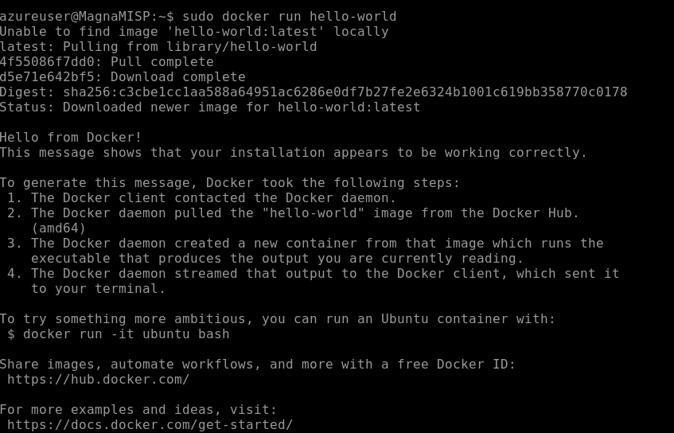
Clone the misp-docker Repository
Pulled the official MISP Docker project onto the server. Running MISP in containers keeps the full stack — web app, database, workers — reproducible and easy to rebuild.
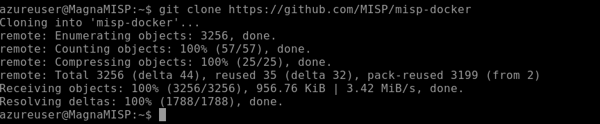
Point MISP at the Server's Public IP
Edited the environment file in nano to set BASE_URL to the VM's public HTTPS address so MISP generates correct links and accepts requests at the address it's actually served from.
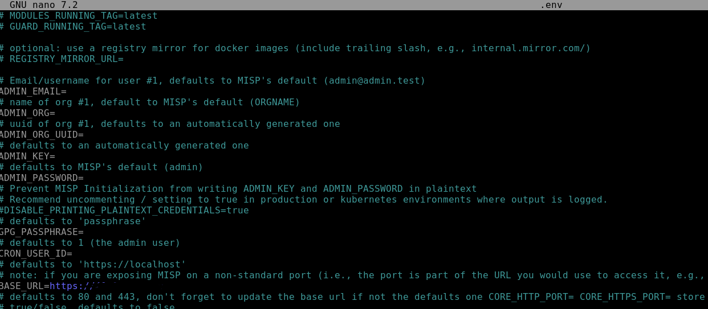
Allow HTTPS Inbound on the NSG
Added a custom inbound rule (AllowAnyCustom443Inbound, priority 310) to the VM's network security group so the MISP web interface is reachable over port 443.
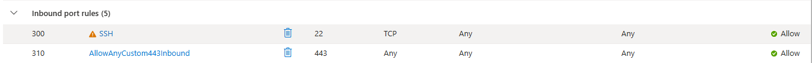
MISP Live over HTTPS
Browsed to the server's public address and confirmed the MISP login page rendering over HTTPS — the containerized stack is up and serving. (The browser's "Not secure" flag is expected here: the lab uses MISP's self-signed certificate rather than a CA-issued one.)

Log In and Verify the GUI
Authenticated with the initial default admin credentials and landed in a clean MISP events console — zero events, ready to be populated with intel feeds.
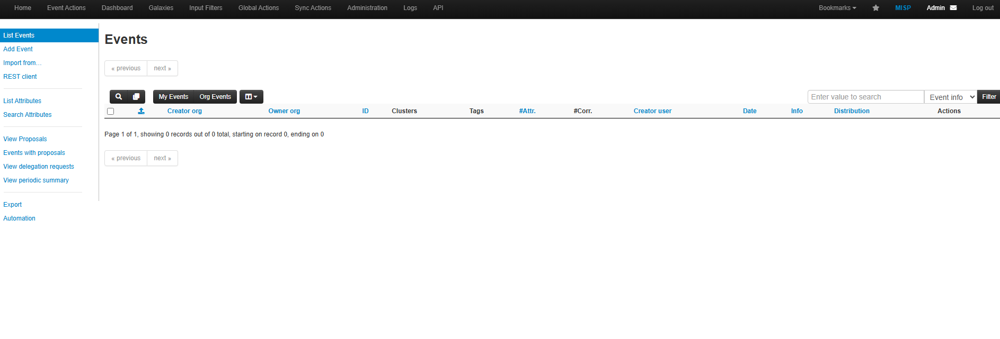
// PHASE 2 — LOAD THREAT INTEL FEEDS
Pull Feed Definitions from the MISP Project
Grabbed the community feed metadata (defaults.json) from the official MISP repository — a curated set of open-source indicator feeds including IP blocklists and other OSINT sources, ready to import as JSON.
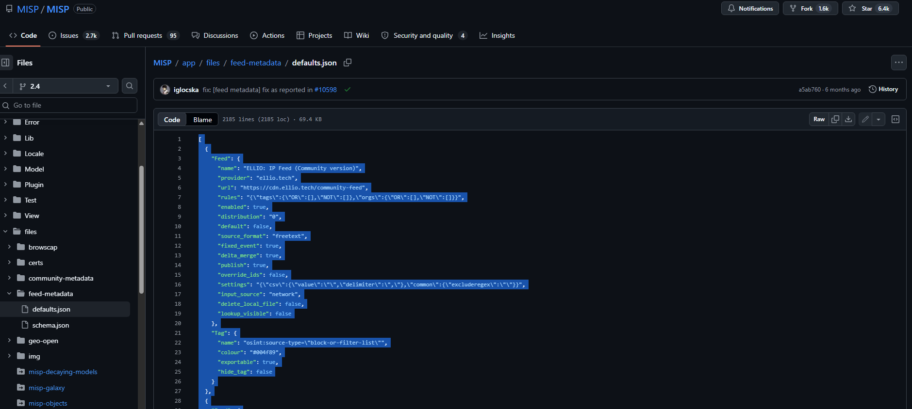
Import the Feeds into MISP
Pasted the feed JSON into MISP's "Import Feeds from JSON" tool, registering sources like the ELLIO community IP feed. Once enabled and cached, these feeds continuously populate MISP with fresh indicators of compromise.
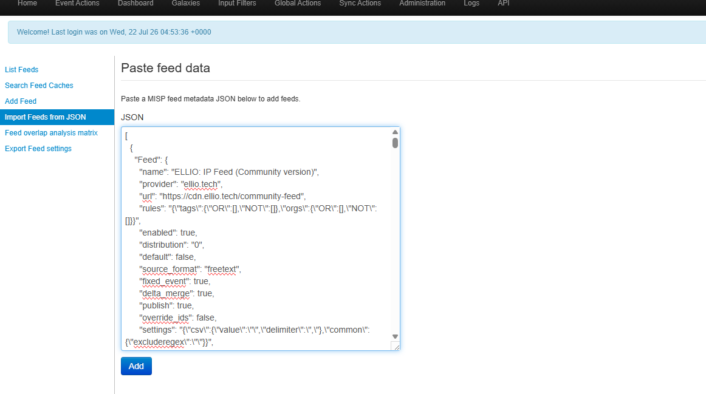
// PHASE 3 — BRIDGE MISP TO SENTINEL
Install MISP2Sentinel from Content Hub
Installed the community MISP2Sentinel solution from the Microsoft Sentinel Content Hub — the data connector that lets Sentinel receive threat intelligence indicators pushed from a MISP instance via API.
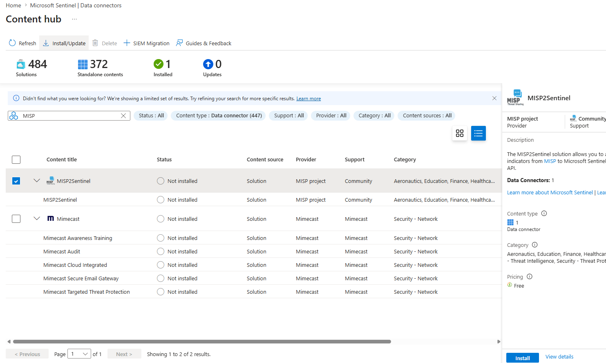
Register an Entra ID Application
Created a single-tenant app registration (MagnaMISPtoSentinel) in Entra ID. This service principal is the identity the integration uses to authenticate to Microsoft's APIs — no user credentials involved in the pipeline.
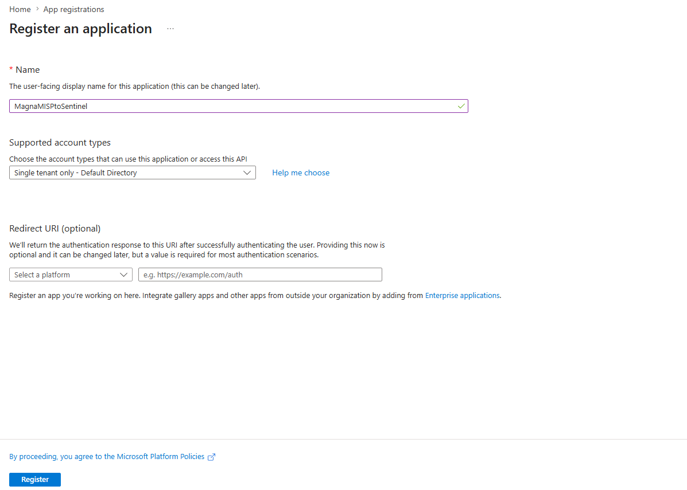
Issue a Client Secret
Generated a client secret for the app registration with a 180-day expiry — the credential the Azure Function presents alongside the app's client ID when requesting tokens.
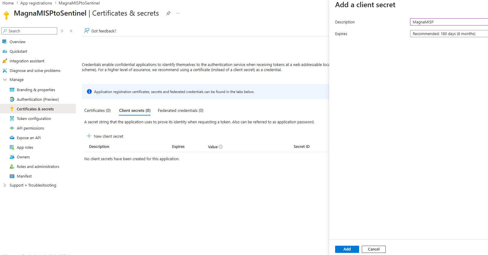
Grant Sentinel Contributor on the Workspace
Assigned the Microsoft Sentinel Contributor role to the MagnaMISPtoSentinel application, scoped to the Log Analytics workspace — exactly the access the integration needs to write threat intel indicators, and nothing broader.
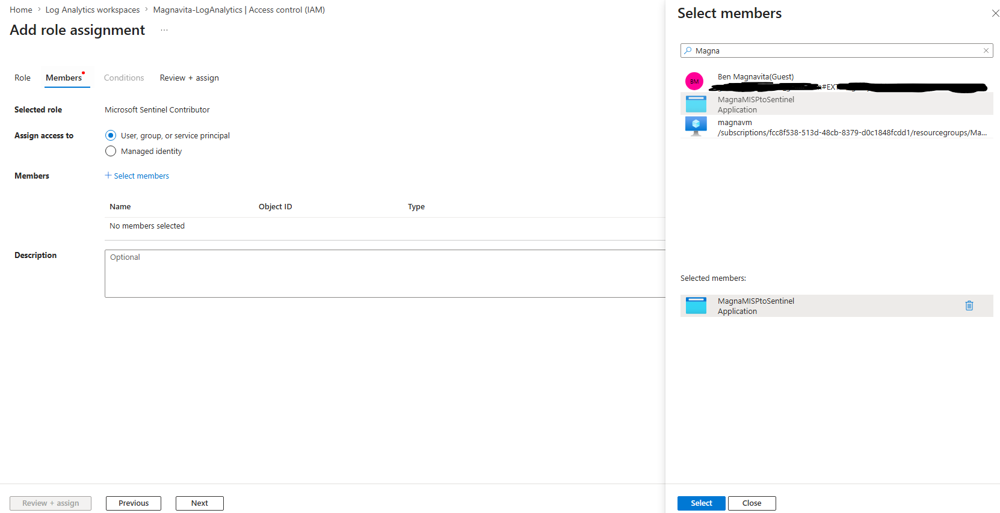
Generate a MISP Auth Key
Created an API authentication key in MISP for the integration to pull indicators from the MISP server. With the Entra app credentials and this key, the pipeline can authenticate to both ends: read from MISP, write to Sentinel.
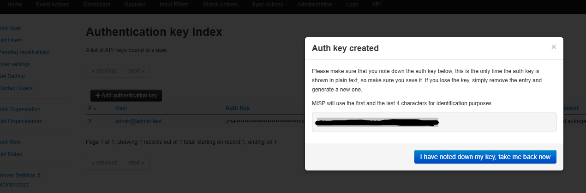
// PHASE 4 — AUTOMATE WITH AN AZURE FUNCTION
Create the Function App
Stood up a Linux Function App (MagnaMISPtoSentinel) in the MagnaMISP resource group — the serverless host that will run the sync job on a schedule, with no VM to maintain for the automation layer.
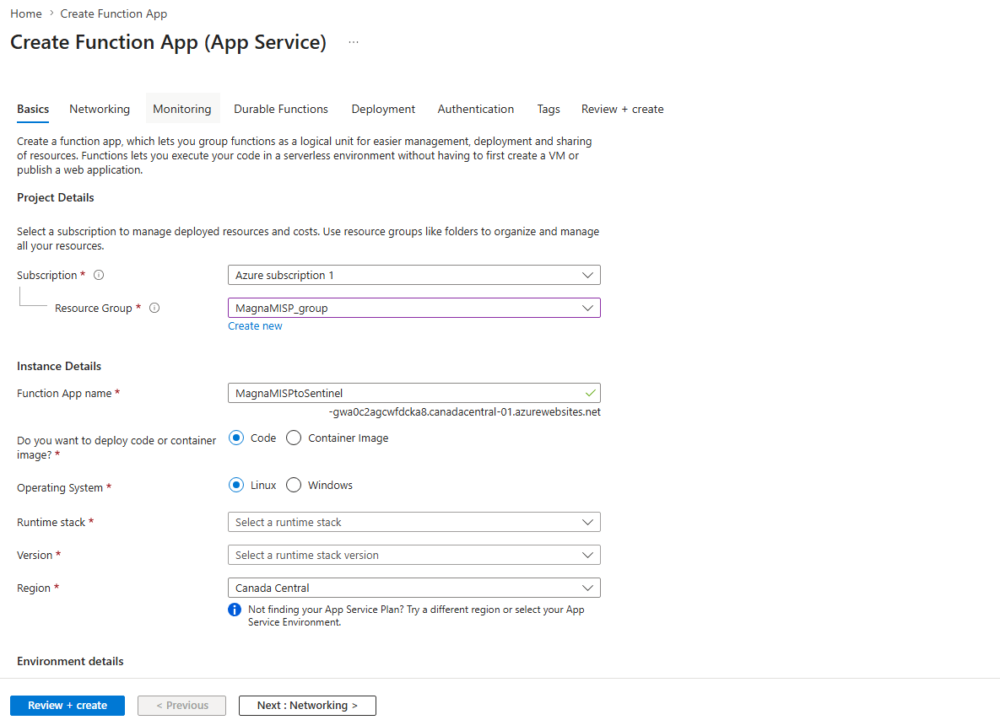
Function App Resources Deployed
Azure provisioned the supporting resources — App Service plan, storage account, and Application Insights for monitoring — all green in the deployment details.
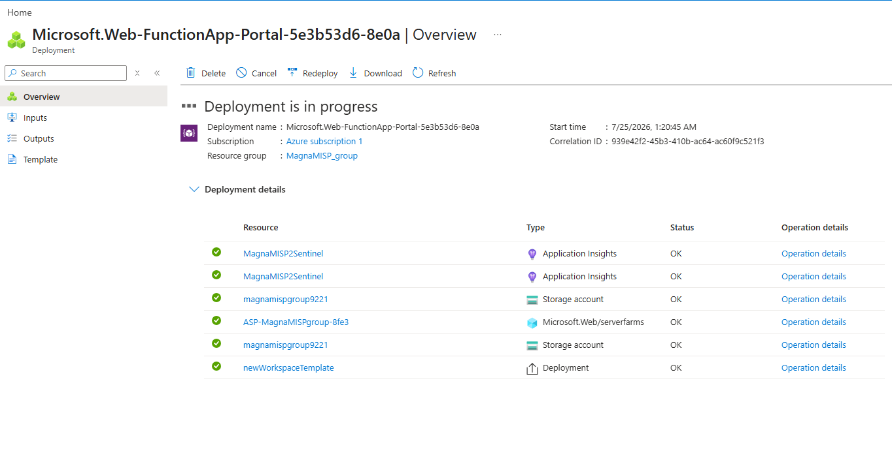
Download the misp2sentinel Repository
Pulled the community misp2sentinel project — the Python codebase containing the Azure Function that queries MISP for indicators and upserts them into Sentinel through Microsoft's threat intelligence API.
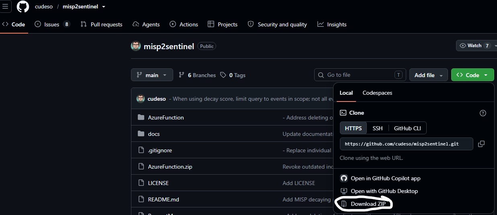
Open the Project in VS Code
Opened the repo in VS Code to review the structure and configure the function — the AzureFunction directory holds the deployable code, with config defaults to update for the MISP URL, app credentials, and workspace targets.
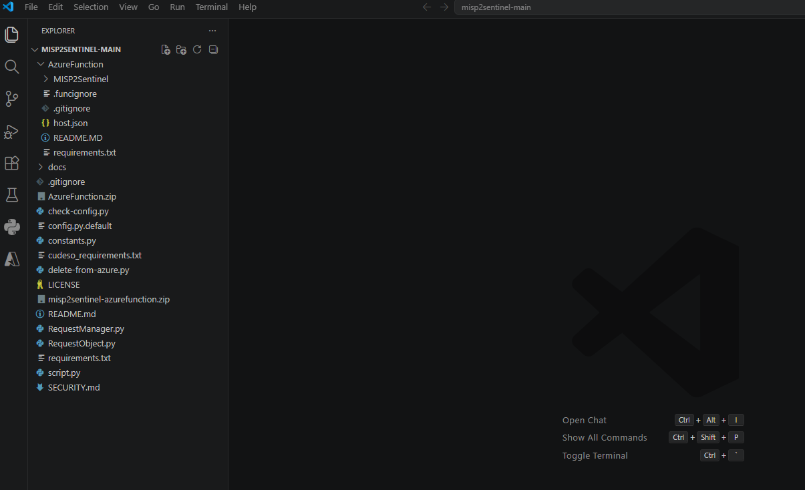
Sign In to Azure from VS Code
Authenticated the Azure Resources extension in VS Code, linking the editor to the subscription so the function can be deployed straight from the workspace.
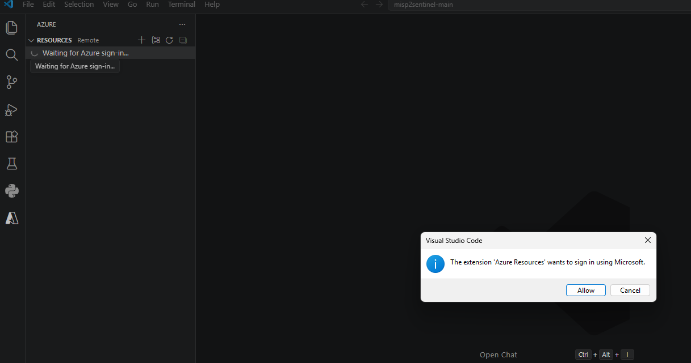
Deploy the Function to Azure
Deployed the MISP2Sentinel function code to the MagnaMISP2Sentinel Function App directly from VS Code, confirming the overwrite prompt for the target app.
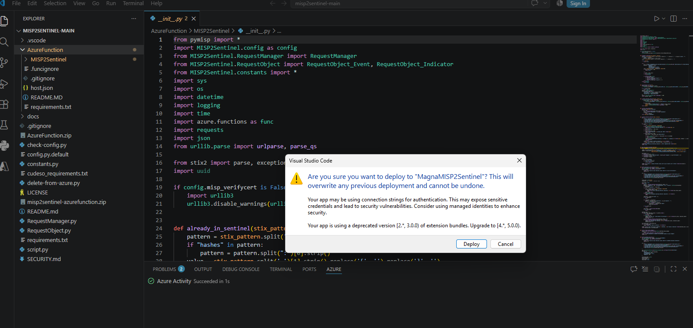
Timer-Triggered Function Running
The MISP2Sentinel function shows Enabled with a Timer trigger — the sync job now runs on a schedule with no manual steps. Last piece: giving it the configuration values it needs to talk to both ends of the pipeline.
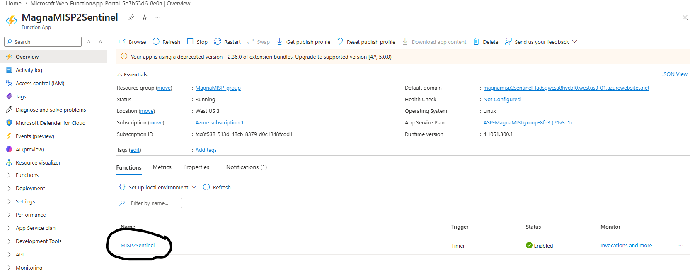
// PHASE 5 — CONFIGURE & VERIFY
Identify the Values config.py Expects
Reviewed the function's config to map out every value the ms_auth block pulls at runtime: tenant ID, client ID, client secret, workspace ID, subscription ID, resource group, and workspace name — plus the MISP API key on the other side.
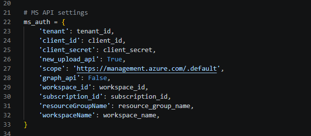
Supply Them as Environment Variables
Created application settings on the Function App for each required value — client_id, client_secret, mispkey, tenant_id, subscription_id, resource_group_name, workspace_id, workspace_name — so credentials live in the app's environment configuration rather than hardcoded in the deployed source.
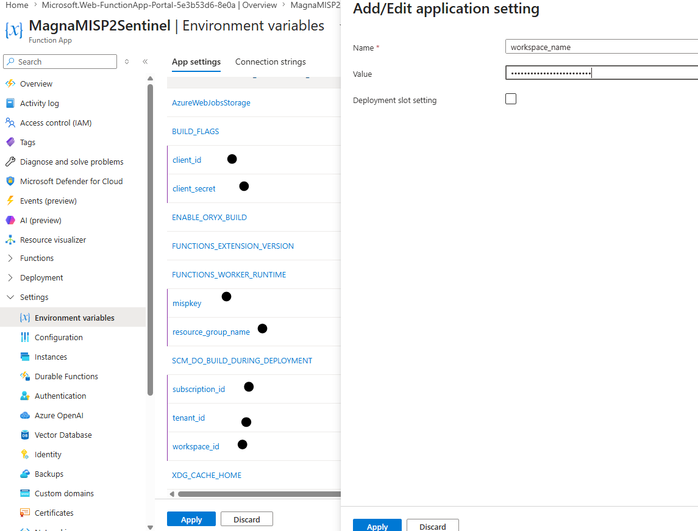
241K Indicators Feeding Sentinel
The result: Sentinel's Threat Intelligence blade shows 241K indicators from 2 sources flowing into the workspace. This intel is now available to correlate against the live attack telemetry from the honeypot — the foundation for building analytics rules that alert when observed traffic matches known-bad indicators.
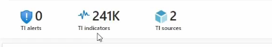